EMBLEMA XLV.
revu le 27 juillet 2003
Sol & ejus umbra persiciunt opus.
(Le soleil et son ombre achèvent l’œuvre1.)Le soleil, clair flambeau du pôle2, ne peut vaincre
La densité des corps : une ombre à l’opposé
Demeure. Elle est la plus vile des choses
Et pourtant l’astronome en tire maint profit3.
Mais le Soleil avec son ombre fait aux Sages
Un don meilleur : il achève l’œuvre de l’or4.Comme dans un palais rond ou de forme sphérique un feu allumé en un seul endroit se propage jusqu’à l’ensemble des murailles et éclaire à la ronde les parties supérieures et inférieures à l’exception de celles où une table, placée au milieu, l’arrête en s’interposant et provoque une ombre ténébreuse, ainsi le soleil placé dans le beau palais du ciel ou théâtre ciselé illumine de ses rayons toute la concavité du ciel avec les corps diaphanes et pouvant recevoir la lumière qui sont contenus en lui, c’est-à-dire toutes les étoiles errantes et fixes, sauf à l’endroit où la densité de la terre intermédiaire l’en empêche5. Là en effet l’ombre noire et ténébreuse que l’on appelle nuit persiste jusqu’à ce que la présence du soleil la mette en fuite et qu’à sa place la lumière soit répandue et contemplée. Par conséquent l’ombre et la nuit sont la privation ou absence de la lumière solaire, et le jour est au contraire son irradiation et son expansion de tous côtés. C’est l’ombre qui ne peut supporter la vue du soleil et pour cette raison fuit et se cache tantôt d’une partie de la terre tantôt d’une autre, selon que le soleil est à l’opposé6. Le soleil et l’ombre ne se sont jamais vus, bien que cela puisse se faire à n’importe quel moment, si la nature l’admettait. Mais le soleil, comme s’il avait entendu dire qu’elle est son ennemie, la poursuit constamment dans sa fuite et ne peut pas la saisir, car elle n’est jamais fatiguée, ainsi que Buchanan l’a bien chanté dans son Poème Sphérique.
A l’imitation et à l’exemple de ce grand soleil et de son ombre, les philosophes ont observé que leur soleil possède aussi une ombre noire, nébuleuse et fugitive. C’est pourquoi Hermès dit :« Mon fils, extrais du rayon son ombre » 7;
c’est-à-dire : veille à faire tourner ton soleil au moyen du premier mobile auquel Vulcain commande, pour que cette partie aussi de la terre, qui est maintenant recouverte par l’ombre et la nuit, jouisse de la claire lumière du soleil. Si en effet le mouvement premier ne faisait pas décrire un tour au firmament entier du ciel avec tout ce qu’il contient en chaque jour naturel, c’est-à-dire en vingt-quatre heures, et si le soleil n’était mû que par son mouvement propre, secondaire et annuel, les Antipodes qui se trouvent au-dessous de nous auraient en l’espace de six mois une seule nuit et nous un seul jour et ensuite, inversement, ils auraient le jour et nous la nuit ; l’année tout entière se composerait alors d’un jour et d’une nuit uniques, comme à présent la raison et l’expérience nous prouvent que ces successions se déroulent sous l’un et l’autre pôles8. Mais il a plu à la Providence divine d’agir tout autrement. Elle a donc ordonné un double mouvement des planètes, l’un primaire et l’autre secondaire, et a ainsi distribué l’année en un grand nombre de jours. Cette ombre et le soleil ensemble font le jour et la nuit, ce que le soleil ne pourrait pas faire à lui seul puisque sa propriété est d’illuminer tous les lieux et les corps qui lui sont opposés, et non de faire de l’ombre, si ce n’est accessoirement lorsqu’il est absent9.
De même le soleil philosophique lui aussi, avec son ombre, fait le jour, c’est-à-dire la lumière, et la nuit ou Latone ou la magnésie10, dont l’ombre doit être détruite et brûlée au moyen d’un remède igné, selon les paroles de Démocrite, comme on le voit au début du troisième Livre de La Table d’Or. L’utilité des ombres en astronomie est si grande que sans elles cette science aurait peine à être complétée. Les chimistes déclarent également qu’ils doivent à leurs ombres de mener leur art à sa perfection. Que serait en effet le soleil sans son ombre ? Ce qu’est le battant sans la cloche. Certes, c’est le battant qui effectue le premier mouvement pour que le son soit rendu, mais c’est elle qui rend le son. Il est le plectre, elle est l’instrument ; il est la langue, elle est la vaste bouche. L’ombre est chose très vile, proche du non-être11 ; de même l’ombre des philosophes est chose noire, plus noire que le noir12, comme ils l’appellent, plus vile même que l’algue13, non en elle-même, mais au regard de l’opinion et de l’estime des hommes. Qu’y a-t-il de plus utile que le feu, de plus précieux que l’eau, de plus aimable que la terre qui donne les fleurs et tout ce qu’il y a d’aimable ? Quoi de plus agréable que l’air, puisque toutes choses cessent d’être agréables si on l’empêche d’arriver ? Et cependant, comme ils sont à la disposition des hommes dans leurs sphères largement ouvertes, ils sont tenus pour choses très viles, par un défaut de l’imagination14. L’ombre commune et l’ombre philosophique sont, de leur côté, jugées de la même manière. Ceux qui demeurent longtemps dans les ombres souterraines, s’ils sont amenés subitement à la claire lumière du soleil, perdent la vision15 et la vigueur des yeux. De même ceux qui restent et opèrent dans l’ombre philosophique et ne lui adjoignent pas le soleil sont privés de jugement et des yeux de l’esprit et ils sont frustrés du succès. A midi, quand le soleil céleste est liant, la chaleur est plus grande et l’ombre moins étendue. Ici de même l’ombre diminue lorsqu’on augmente la chaleur, et inversement. Il faut donc commencer lorsque le soleil est dans le Capricorne16 et, à partir du côté méridional, se tourne de nouveau vers notre pôle. Et la première opération sera accomplie jusqu’au Bélier. Alors commence l’œuvre des femmes jusqu’au Lion ; puis un travail sort de l’autre jusqu’à ce que l’année saisisse sa queue avec sa tête comme un serpent, c’est-à-dire jusqu’à ce qu’elle soit accomplie17.
Notes1. Avec ce chapitre, Michel Maier nous fait entrer dans le monde céleste. En somme, nous n'en étions jamais bien loin avec les emblèmes précédents, puisque les dieux de la mythologie grecque et romaine renvoient, en bonne part, à l'Olymphe hermétique, tel que nous l'avons défini dans l'humide radical métallique. Ici, c'est à une série de variations sur l'ombre et sur la complémentarité lumière - obscurité que joue Maier. Pour élémentaire que paraisse cette dualité, qui nous semble parfaitement évidente, elle recèle des richesses que celui qui n'est pas au fait des mystères des vieux alchimistes peut laisser passer. Il faut d'abord définir ce que représente le soleil dans l'Art sacré. On se reportera à la section déjà citée où nous donnons des précisions là-dessus. Le soleil dispense la lumière. On le représente par un point car il est la manifestation du fixe, c'est-à-dire des substances qui finiront par triompher du royaume d'Hadès. Dans un premier temps, ces matières seront introduites dans un creuset brasqué sous forme pulvérulente ressemblant à de la cendre : il s'agit des chaux métalliques et du Mercure qui se présente en un premier temps comme une « eau sèche qui ne mouille point les mains », expression que l'on attribue à Basile Valentin. Dans un second temps, l'Artiste va actionner le « premier moteur » qui fait tourner la roue céleste et Vulcain aidant, ces chaux vont se transformer en eau étoilée métallique. C'est la mise à feu de ce premier moteur qui va alors actionner le second moteur : l'évolution des chaux métalliques, avec leurs révolutions successives, leurs rétrogradations, leurs occultations, bref tout ce qui va porter les principes à se conjoindre ou à se dissocier. Le but de ce manège est d'opérer la conjonction radicale des deux principes [Soleil et Lune], et de faire participer les astres, lesquels par leurs rapports mutuels, définiront l'harmonie du tout en sorte que la teinture puisse se fixer en masse lors de la projection. La figure I montre l'exemple
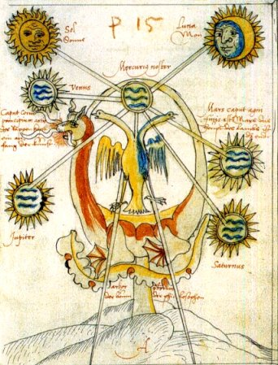
FIGURE I
(Alchimitisches Manuscript, Donum Dei, 1550, Ms. L IV, 1, UB Basel, (vgl. Bild 90)du dispositif que l'alchimiste doit s'efforcer de monter. L'image représente les deux grands principes [Soleil et Lune], qui échangent des rayons avec Mercure. Lequel Mercure est symbolisé, outre le cercle où des serpents sont peints, un dragon qui se mord la queue, ayant les caractères mixtes du Mercurius senex de Jung et du serpent Ouroboros, représentant le Mercure animé. L'androgyne hermétique est représenté par un aigle double [il s'agit du Rebis] et on distingue trois flammes sortant de la gueule du dragon où l'on peut deviner l'Esprit, le Corps et l'Âme de la future Pierre. Les autres planètes, représentant d'autres principes ou des chaux sont dessinées dans un ordre qui n'est pas harsardé : Vénus et Mars d'abord, Jupiter et Saturne ensuite. Enfin, le pied, c'est encore, par cabale, tiqhmi [qhsomai], le fondement de l'oeuvre, la pierre de touche, c'est-à-dire la Terre.
L'ombre n'étant que l'occultation de la lumière solaire, désigne tout ce qui a trait à la dissolution. Les lois de l'Optique permettent, en liaison avec les lois de la Cabale hermétique, de définir - par la connaissance des ombres portées - l'évolution de la matière à partir du moment où l'Artiste ébranle l'Aquilon, c'est-à-dire le premier moteur.
2. Au pôle, chacun le sait, la nuit dure six mois et le jour pareillement. Il s'agit là des vrais journées philosophiques. Il s'agit du fameux spectacle appelé le « soleil de minuit », que l'on peut admirer dans la zone située au-delà du cercle polaire, définie d'après l'inclinaison de l'axe terrestre, comme se traçant aux latitudes 66° 33' Nord et Sud. Le soleil reste fort bas sur l'horizon. Cette zone doit être reliée aux constellations intéressant l'alchimiste, notamment le Petite Ourse, où trône l'étoile polaire, mais aussi celle des Sept Boeufs de labour, qu'on définit comme étant les étoiles de la Grende Ourse, au Septentrion. L'étoile polaire est à l'image de notre SEL incombustible ; les Sept Boeufs, faisant songer aux sept planètes et aux sept métaux, font évoquer le Soufre rouge.
3. L'ombre, c'est un fait évident, ne saurait exister sans le soleil. Pour l'astronome, l'ombre se définit par rapport aux phases des planètes inférieures, comme nous l'avons vu dans l'humide radical métallique. Lorsque nous voyons les planètes inférieures dans leur conjonction supérieure, elles brillent le plus mais Mercure est invisible ; on peut la voir à son maximum d'élongation Est ou Ouest, lorsqu'elle offre respectivement son premier quartier sidéral et son dernier quartier. La chose est vrai de Vénus, beaucoup plus proche de nous il est vrai, qui resplendit aux crépuscules. En alchimie, on peut de la sorte définir la quantité des matières de l'oeuvre, par l'ombre portée par les corps planétaires, vus sous l'angle de la Terre, et, encore une fois, cela est avant tout vrai de Mercure, de Vénus et de la Lune. On notera que ces planètes symbolisent des principes volatils ou, du moins, destinés à disparaître dans le cours de l'oeuvre. Le cas de Vénus est spécial parce qu'elle contracte, selon les alchimistes, des rapports avec Saturne [le dissolvant] alors que pour d'autres, elle représente Aphrodite [elle-même constituant une sorte d'écume de mer, la partie saline du dissolvant] ou l'un des vitriols [le bleu, en l'occurrence, sel double pouvant donner du vitriol et du sulfate de cuivre].
4. Phrase de l'épigramme qui semble recouvrir une parabole sur les phases de la Lune. Nous en parlerons infra. Comme l'emblème montre le Soleil, la Lune [dans une phase d'ailleurs qui ne correspond absolument pas à la position du soleil] et une ombre virtuelle qui se profile en toile de fond, l'intention de l'artiste semble de mettre l'accent sur cette ombre. Qu'est-elle ? Que constitue-t-elle ? L'ombre [umbra, skia, ajaneia, yuch, projasiV] se définit de manière universelle comme la partie d'un espace éclairé où la lumière est interceptée par la présence d'un corps opaque [qui peut être solide, liquide ou gazeux ou tenir d'une suspension très divisée]. La seconde occcurrence [ajaneia] peut renvoyer à ajavizw [rendre invisible], propriété d'un casque que nous avons vu dans une autre section, casque sur lequel était juché un chien. La troisième occurrence [yukh] nous ramène à l'âme, en bonne conformité avec la cabale hermétique : il faut envisager que l'on parle alors de l'âme comme séparée du corps et descendue dans les Enfers [épithète du Mercure dans son premier état]. En somme, yuch est Psyché et nous devons considérer que cette ombre porte des ailes, comme Eros, sorte de « papillon angélique », thème développé dans la section Fontenay. Enfin, la quatrième occurrence [projasiV] fait comprendre que l'ombre soit envisagée comme la manifestation temporaire d'un devenir, c'est-à-dire l'ombre portée. Aussi bien, la définition de l'ombre comme d'une part «ce qui s'oppose à la lumière» et d'autre part « l'image même de choses fugitives et changeantes » est trop vague pour qu'on en puisse en saisir toute la portée hermétique, appliquée au domaine de l'alchimie. Ce n'est certes pas que le magistère soit dépourvu d'un adret et d'un ubac, se renvoyant d'ailleurs l'un à l'autre quand l'Artiste fait tourner la roue du premier moteur. Voilà qui nous fait réfléchir sur le sens que peut revêtir l'absence d'ombre, en raison du manque de corps pour intercepter la lumière. Elle s'explique par la purification [perméabilité absolue du corps à la lumière], par la sortie des limites de l'existence corporelle [certaines religions ou philosophies telles que le bouddhisme y invitent] ou enfin par la position centrale du corps,à l'aplomb exact du soleil des Sages, que définit parfaitement le cercle pointé du symbole solaire. Ajoutez-y un croissant lunaire, vous aurez le Taureau _ ; scindez-le en deux parties égales et effectuez une rotation de p/2 ; vous aurez le Bélier, décomposé selon la Monade Hiéroglyphique de John Dee : 3. [il faut imaginer que le demi-cercle à gauche - ¤ - a subi cette rotation], puis w. après une nouvelle rotation de p/2. Lorsque la matière est dans l'état défini par ces deux signes [où le Soleil et la Lune sont exaltés], alors elle ne se nourrit que de l'ombre des choses, c'est-à-dire qu'elle est arrivée à un état de dissolution totale. Il ne faudrait pas croire alors que l'alchimiste, pour réussir son affaire, soit obligé comme le Dr. Faustus de Goethe, de vendre son âme au diable : il n'existerait plus, non seulement comme âme mais encore comme esprit.
5. le palais rond est le vase de nature ou oeuf philosophal. Il est de forme ovoïde mais sa substance est de verre [cf. emblème II, VIII et IX]. La concavité du ciel ne vaut que pour le monde clos des alchimistes.
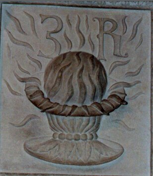
FIGURE II
(Hôtel Lallemant - Bourges - détail de caisson - cliché Alain Mauranne)Quant au soleil, ou plus exactement [parce que c'est dans ce sens que le mot est pris] au feu des Sages, il réverbère la lumière et la chaleur diffusée. En liaison avec ce que nous avons dit supra, le lecteur n'aura aucune difficulté à identifier ce que représente le chiffre 3 et la lettre R. Quant aux astres, ce sont les étoiles mobiles, presque filantes pourrait-on dire, si l'on considère la vitesse de leurs mouvements rapportée au temps de l'Univers, qui vont nous intéresser. Nous en avons dit quelques mots déjà. Aussi, allons-nous concentrer l'attention du lecteur sur la portée hermétique des éclipses et des occultations, périodes rares où l'ombre manifeste sa plénitude. Auparavant, conformément à ce que nous avons établi, il faut donner la définition du premier moteur, qui anime l'ensemble de la voûte céleste. Voici ce qu'écrit le moine Placidus De Titis, dans son Primum Mobile :
II existe deux mouvements des étoiles par lesquels elles exercent une influence sur les Inférieurs celui du primum mobile et celui autour du monde mais les familiarités ne sont rien d'autre qu'un influx proportionnel produit par leur mouvement comme on l'a dit. Il en découle nécessairement qu'il existe deux types de familliarités des étoiles, celles dans le Zodiaque et les autres autour du Monde elles sont toutes deux mentionnées par Ptolemée et à plusieurs reprises d'abord dans L'Almageste, Livre VIII chapitre IV en ces termes : « Il reste maintenant à parler de leurs aspects (sauf ceux qui se constituent d'eux mêmes et sont considérés comme immuables par exemple en ligne droite ou aspect trigone ou d'autres semblables) donc certaines des familiarités ne se forment qu'entre les planètes, le Soleil et la Lune et les différentes parties du Zodiaque d'autres seulement vis-à-vis de la Terre, enfin d'autres encore par rapport à la Terre, aux planètes, au Soleil et à la Lune et aux différentes parties du Zodiaque etc. »C'est aux rapports entretenus par le Soleil, la Terre et la Lune que nous allons centrer l'analyse.
Il en ressort a l'évidence que Ptolémée établit ces deux types de familiarités dans le Zodiaque et envers la Terre c'est-à-dire dans le Monde. Ensuite dans le Tetrabible au début du premier Livre il dit ceci : « L'une qui est la première en ordre et en certitude grâce à laquelle nous découvrons à chaque moment les configurations du Soleil de la Lune et des autres astres et les regards qu'ils ont entre eux et ceux qu ils ont envers la Terre. » [Primum Mobile, trad. de l'anglais, Claudine Besset-Lamoine, édition FDAF, Paris, 1998]
6. Il ne servirait à rien, en effet, de gloser sur l'évidence des jeux d'ombre et de lumières créés par l'irradiation naturelle du soleil. Nous allons une fois de plus prendre notre bâton de pèlerin et nous servir de la cabale hermétique ainsi que des hiéroglyphes 3 et R que nous avons vus note 5. En plus, nous utiliserons les deux roues dont Fulcanelli a montré l'utilité indispensable dans l'oeuvre et dont nous venons, par le précédent extrait du Primum Mobile, d'entrevoir le sens. Il s'agit du mouvement diurne [c'est par ce mouvement diurne d'ailleurs que l'on utilise un procédé prévisionnel qui paraît insolite de prime abord et qui est appelé technique des directions primaires. Nous y avons consacré un ouvrage auquel nous renvoyons le lecteur intéressé. Qu'il sache seulement qu'y sont résumées 27 années de travail dans ce domaine]. Cette première roue, celle qui fait tourner le premier mobile est assimilable à la « sphère du Même » de Platon [Timée, GF, trad. Luc Brisson, 1992]. Elle définit le niveau de l'horizon de l'observateur dans l'espace, pris au centre de la sphère armillaire. La deuxième roue est « la sphère de l'Autre » et définit le mouvement périodique propre des astres, pris dans la sphère du Même. A partir de là, s'expliquent et la durée du jour, et, fait capital pour les alchimistes, les phases de la lune.
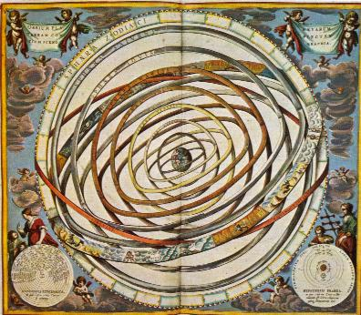
FIGURE III
(l'univers ptolémaïque, sphère armillaire)Les Rationnalistes noteront que nous utilisons le système solaire envisagé du point de vue de Ptolémée et non de Copernic. Les alchimistes ont placé en effet la Terre au centre de leur univers mais ils ont pris garde d'informer les impétrants que les influences astrales ne sauraient se comprendre que par l'esprit et que les gens d'imagination pauvre en seraient pour leur frais. Le hasard fait bien les choses puisque les mercantis sont très terre à terre et que, dès lors, ils ne sauraient savoir, si même ils l'entendaient, ce que sont, dans l'Art sacré, l'Esprit et l'Âme.
Comme les autres planètes, la lune est dépourvue de lumière propre. Elle brille du fait de son éclairement par le soleil. Partant de là, le principe des phases de la lune est facile à comprendre. Les phases, commandées dans leur périodicité par les positions respectives de la lune et de la terre. Si l'on fait la supposition que la Terre est fixe par rapport au Soleil [ce qui n'est pas faux puisque la Terre forme ce SEL incombustible sur lequel va se fixer le Soufre], tandis que la Lune accomplit un tour complet [ce que réalise au vrai la lune hermétique dans le magistère], il apparaît de fait que la moitié des deux globes sera constamment visible pour un observateur extérieur, s'il se situait dans un vaisseau spatial se trouvant à l'aplomb du pôle Nord de la Terre. Malheureusement, notre pauvre alchimiste ne pouvant réaliser ce tour de force [ce que font les satellites à présent], c'est par la force de sa pensée qu'il sera amené à démêler la trame de la toile tissée par Ariadne. Reprenant cette parabole de l'alchimiste jetant un oeil sur le manège des planètes [des substances] dans l'espace [dans l'oeuf], il serait amené en première intention de joindre tout simplement les extrémités du vaisseau de nature, en sorte que de deux moitiés visibles et éclairées nettement [si l'on nous entend bien], ne soit fait qu'un seul corps, étincelant et brillant comme le soleil, qui est l'escarboucle des Sages. Hélas, les matières chimériques que notre Artiste a mis dans son petit monde ne se laissent pas domestiquer de la sorte et il se verra contraint à les suivre à la trace, ainsi que l'enseigne sagement l'emblème XLII et, du reste, tous les bons traités de l'Art. Or, qu'enseignent-ils, nos bons alchimistes ? Que l'oeuvre a un Orient, d'où elle démarre, qu'elle passe par un Zénith où la matière est soumise au creuset au 4ème degré de feu et qu'enfin, elle a un Occident, d'où l'Artiste, de prêcheur qu'il était d'abord, d'orfèvre qu'il a été ensuite, devra devenir pauvre pêcheur, et bien malin, s'il veut capturer au filet les poissons argentés et gras de Jean d'Espagnet, comme le maître de l'Art le préconise dans son Oeuvre Secret d'Hermès. Que le lecteur lise donc le Vieil Homme et la Mer, le chef d'oeuvre d'Hemingway ; qu'il compare les scènes où l'espadon géant tire le bateau comme s'il s'agissait d'un bouchon, et comment le pêcheur doit user d'artifice afin que le poisson se fatigue, que de la profondeur il monte en surface, rendant ainsi manifeste sa présence, et que de là, le pêcheur soit assez adroit pour que le poisson commence à faire des tours de bateau, de plus en plus petits, en forme de spirale, analogue aux coquilles d'ammonites qu'une certaine matière fait voir de façon d'ailleurs si courante. Que le lecteur n'oublie pas que le pêcheur, durant tout ce temps, a dû s'escrimer à faire filer le poisson grâce à son fil d'Ariane [première roue], à ce que le crochet de l'hameçon soit bien amorcé, pour fixer comme il se doit l'espadon et qu'avant que celui-ci ne soit fixé au bateau, le pêcheur devra s'affairer à faire filer en sens inverse [seconde roue] le lien qui l'unit au poisson, afin que celui-ci se rapproche du point central représenté par ce bateau, que l'on peut en l'espèce, comparer à l'Argos de Jason. La victoire devra couronner ce processus de fixation progressive et le pêcheur pourra ensuite tirer l'huile et la chair du poisson, qu'il apprêtera pour sa pierre. Et bien, que notre lecteur s'imagine que le poisson est la lune, le bateau Argos notre sphère armillaire où nous-mêmes, symbolisons le centre du Monde [ce que nous sommes d'ailleurs de façon très réelle] et qu'il imagine que ce fil n'est autre que l'attraction gravitationnelle. A la position de Nouvelle Lune, c'est toute la moitié non illuminée qui est dirigée vers nous, autrement dit l'ombre, et dès lors, la lune nous est invisible en même temps que les rayons du soleil, par leur force, et en dépit du fait qu'ils approchent de l'horizon le soir, la dérobent à notre regard. Au plan des travaux alchimiques, cette nouvelle lune signale que les matières doivent être prêtes, préparées sous la forme de substances poudreuses qui sont autant de chaux, couleur de cendre, dont l'Artiste devra faire un Mixte, dans son creuset. A mesure que les jours passent, la Lune « avance en reculant » par rapport au Primum Mobile, à cause du second moteur. C'est le propre des mollusques [seiches] d'où les Anciens tiraient leur encre, que d'autres tirèrent ensuite de l'atrament. Dans ce mouvement, le Lune vient occuper une position faisant un certain angle avec celle du Soleil et une portion de l'hémisphère éclairé se laisse découvrir, définissant le début du premier quartier [le hiéroglyphe du Mercure, à en croire Zozime]. C'est l'effet de perspective qui nous fait découvrir cette lumière solaire réfléchie [R, comme repercussus ou antanaklasiV]. Cette lumière réfléchie se fait comme l'écho [hcw] de celle du soleil et c'est l'une des trompettes que l'on voit sonner au frontispice du Mutus Liber. Lorsque la Lune est en équerre [L ou L] entre le Soleil et la Terre, on voit juste la moitié de l'hémisphère éclairé, c'est-à-dire le quart du globe. C'est le lieu de montrer à
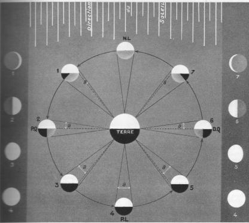
FIGURE IV
(phases de la Lune - lumière cendrée - Astronomie, Lucien Rudaux, Larousse, 1948)présent la figure IV qui montrera que tout n'est pas aussi simple. Que d'abord, la Lune est toujours éclairée sur la moitié de son globe, à l'instar de l'aigle qui regarde fixement le Soleil, et ce n'est que corrélativement à un troisième corps que les phases sont observés. Il est une circonstance particulière où le regard de l'aigle se trouble et nous verrons pourquoi tout à l'heure. Pour l'heure, à partir de son premier quartier, la Lune nous présente de plus en plus sa face éclairée et de moins en moins sa face obscure [rappelons que dans l'absolu, elle a toujours une face éclairée et une face obscure, ce qui, compris selon la cabale hermétique, est important à noter, hormis une circonstance exceptionnelle, ou plutôt deux, selon le point de vue]. Avant d'aller plus avant, nous souhaiterions nous arrêter sur le mot « phase » qui revêt un intérêt de cabale tout particulier. La phase d'une planète se dit en grec jasiV. Plus exactement, Bailly définit jasiV comme l'apparition d'une étoile qui se lève [où il n'est pas difficile de reconnaître Vénus, sous sa forme de Lucifer]. Notons qu'au sens figuré, la phase se dit aussi metabolh où le caractère mercuriel apparaît d'une façon plus claire [déplacement, changement, etc. dans le sens d'une inconstance atavique]. Revenons sur jasiV. Deux occurrences sont du plus haut intérêt : d'abord, jasiV, c'est l'oiseau du Phase, en Colchide, c'est-à-dire le faisan. Dans l'autre acception, jasiV renvoie au fleuve Phase [Phus, Fachs, Rion], ou à un fleuve d'Arménie [Pasin] et, en fin, c'est Phasis, fils d'Hélios, père de Kolkhos, qui donna son nom au fleuve de Colchide. Si nous voulons être complet, nous ajouterons que jasiV, c'est aussi la dialectique [déclaration comprenant une affirmation et une négation, signant par là le caractère d'une discussion, épithète du Mercure]. Bref, la Colchide nous renvoie directement à la Toison d'or et au mythe de Jason et des Argonautes. Ce n'est pas le lieu d'évoquer ici la fable de Jason, mais de faire comprendre en quoi la Toison d'or, le Christophore, se trouve lié aux phases de la Lune. Cette liaison passe par ce que l'on appelle la lumière cendrée. Lorsque la lune ne montre qu'un assez fin croissant, donc au moment où Vulcain ardent n'est pas imposé dans toute sa violence, on voit à l'intérieur du croissant tout le reste du disque qui dessine à nos yeux le globe lunaire, reste qui correspond à la partie orientée vers nous de l'hémispohère de la lune non éclairé par le Soleil qui, de ce fait, devrait rester invisible. Mais, en se reportant à la figure IV, la Terre, éclairée par le Soleil dans les mêmes conditions que la Lune [la moitié de l'hémisphère est constamment illuminée, aux restrictions près que nous verrons plus loin], joue pour cette dernière le même rôle que la Lune joue pour nous. Autrement dit, la Terre présente à son tour pour la Lune une même succession de phases, mais diamétralement opposées : ainsi, quand nous voyons la Lune à son premier quartier, de celle-ci, un observateur verrait la Terre à son dernier quartier, tandis que la Lune étant nouvelle, la Terre est dans son plein. Pour cette raison, on peut dire [c'est vrai en optique comme en hermétisme alchimique] que la Terre est la « lune » de la Lune et, dès lors, la lumière cendrée n'est autre chose que le clair de Terre, venant illuminer la portion de sol lunaire, qui, plongée dans l'ombre, se trouve tournée vers nous. La figure IV permet de montrer que cette lumière cendrée est maximale à partir du moment où l'on voit le premier quartier [les cornes du croissant de lumière, c'est-à-dire au crépuscule du soir où brille Hesperus ] et qu'elle diminue au fur et à mesure que la phase progresse jusqu'au premier quartier. Pour notre observateur, toujours situé à l'aplomb du pôle nord de la Terre, trois sections de lune seront alors visibles : la première est la moitié de globe toujours illuminée par le Soleil [½] ; la deuxième moitié du globe lunaire, celle située du côté de l'ombre [cachée par le corps] est scindée en deux : du côté extérieur au cercle de la révolution, l'obscurité totale règne [¼]. Du côté tourné vers la Terre, le lumière cendrée [¼]. Comme nous venons de le dire, ce phénomène est de moins en moins apparent à mesure que grandit la phase de la Lune, puisque inversement celle de la Terre diminue dans la même proportion. Ce phénomène disparaît totalement à la Pleine Lune.
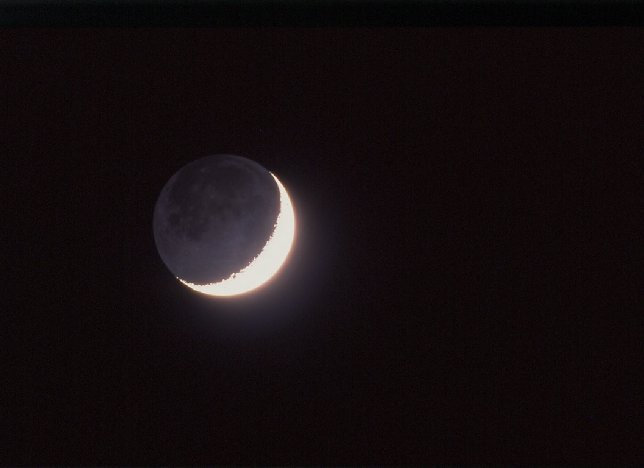
FIGURE V
(lumière cendrée du premier quartier)Quelles conclusions peut-on tirer du point de vue de l'alchimie ?
- point 1 : la Lune est la clef de la disposition du calorique lors du cycle complet, compris depuis la première apparition jusqu'à la dernière apparition [cornes du dernier quartier]. Dans ce cycle, la température doit augmenter d'abord rapidement et passe par un maximum lors de la Pleine Lune ;
- point 2 : dans ce processus, la lumière cendrée représente les chaux des métaux, d'abord visibles lorsque la température n'est point encore trop élevée. On vient de voir que la lumière de la Lune croît dans des proprotions inverses de celle de la Terre, eu égard à leurs phases qui sont inversées. [corollaire alchimique : la fusion des matières croît au pro rata de la température, ce qui explique que la lumière cendrée [le Soufre] va peu à peu diminuer, au fur et à mesure que l'image de la Terre [sur la partie invisible de l'hémisphère lunaire non éclairé par le Soleil] décroît, ce qui est conforme à la doctrine : on comprend par intuition que la quantité de matière non dissoute aille en décroissant. La matière [la lumière cendrée] semble disparaître totalement lorsque la dissolution est totale, chose acquise à la Pleine Lune. Cela survient lorsque le Soleil et la Lune sont en opposition par rapport à la Terre, le symbole correspondant rssemblant à celui de l'infini [¥]
- point 3 : à partir de là, la situation s'inverse et la deuxième roue commence à tourner. Quand nous voyons la Lune à son dernier quartier, signe que la température décroît, la lumière cendrée réapparaît, signe de la réincrudation des Soufres. Et de la Lune, un observateur verrait la Terre à son premier quartier, alors que, rappelons-le, les phases étant inversées, lorsque la Lune est à son premier quartier, un observateur lunaire verrait la Terre en son dernier quartier.
- conclusion : ce jeu de clair-obscur [chiaroscuro] donne de précieuses indications sur l'époque de la dissolution complète, celles où les Soufres entrent en dissolution [la Terre disparaît peu à peu et lorsque la Lune est « pleine », la Terre apparaîtrait « nouvelle » pour l'observateur lunaire, ce qui est, là encore, en pleine conformité avec la doctrine]. La conjonction des Principes est radicale à la prochaine conjonction. Pour finir sur la lumière cendrée, voici cet extrait du Messager Céleste de Galilée :[...] Découvrons la chose plus clairement. La Lune dans les conjonctions, quand elle se trouve entre le Soleil et la Terre, est inondée par les rayons du Soleil à son hémisphère supérieur, détourné de la Terre, tandis que son hémisphère inférieur, par où elle regarde la Terre, est recouvert de ténèbres ; elle n'éclaire donc absolument pas la surface terrestre. La Lune, qui s'est éloignée peu à peu du Soleil, est désormais illuminée sur une certaine partie de l'hémisphère inférieur orienté vers nous, elle tourne vers nous des cornes blanchissantes, quoique ténues, et elle éclaire légèrement la Terre ; l'éclairement solaire croît sur la Lune qui parvient désormais à la quadrature, et le réfléchissement de cette lumière augmente sur la Terre. La clarté s'étend encore sur la Lune au-delà du demi-cercle, et nos nuits resplendissent plus brillantes ;enfin la face entière de la Lune, du côté où elle regarde la Terre, est irradiée par les plus brillantes lueurs venues du Soleil en opposition, la surface terrestre luit de partout, inondée par la clarté lunaire ; ensuite la Lune qui décroît nous envoie de plus faibles rayons, la Terre est illuminée plus faiblement ; la Lune se hâte vers la conjonction, la nuit noire envahit la Terre. C'est donc selon un tel cycle que la clarté lunaire nous dispense tour à tour ses illuminations de chaque mois, tantôt plus brillantes, tantôt plus faibles mais le bienfait est équitablement rendu par la Terre. En effet quand la Lune se trouve sous le Soleil aux alentours des conjonctions, elle regarde en arrière la surface entière de l'hémisphère terrestre exposé au Soleil et illuminé de vigoureux rayons, et elle reçoit de la lumière réfléchie par cette surface ; et par conséquent, grâce à un tel réfléchissement, on voit luire assez fort l'hémisphère inférieur de la Lune bien qu'il soit privé de la lumière solaire. La même Lune, quand elle s'est éloignée du Soleil d'un quart de cercle, regarde seulement une moitié éclairée de l'hémisphère terrestre, à savoir l'occidentale, car l'autre moitié orientale est obscurcie par la nuit ; donc la Lune elle aussi est moins brillamment éclairée par la Terre, par conséquent cette lumière secondaire qui est la sienne nous apparaît plus faible. [...] Dans ses différentes positions par rapport à la Terre et au Soleil, elle reçoit plus ou moins de lumière de la réflexion terrestre, selon qu'elle regarde une portion plus ou moins grande de l'hémisphère terrestre illuminé ; cette règle s'observe en effet entre ces deux globes qu'aux moments où la Terre est le plus éclairée par la Lune, alors la Lune est en échange le moins illuminée par la Terre, et vice versa [...] Bien plus, la Terre, par un échange équitable et reconnaissant, rend à la Lune elle-même un éclairement égal à celui qu'elle reçoit de la Lune presque en tout temps dans les profondes ténèbres de la nuit.Ajoutons à cela que la Lune présente un mouvement de libration [de liber, balance], ce qui ne saurait étonner l'hermétiste du moment qu'il sait ce que représente la Balance [Atalanta, XLI] dans le magistère.
7. Il est, en effet, une circonstance exceptionnelle, où l'ombre de la Lune se met à l'aplomb d'un certain lieu pour y dessiner une image en forme de serpent. Notre intention n'est pas ici de réaliser un cours d'astronomie mais simplement de faire valoir les analogies entre des événements astronomiques assez rares, en liaison avec l'analyse du présent emblème d'une part, et dans le cadre plus général du symbolisme hermétique. Voyons d'abord qu'il est remarquable que l'ombre d'un
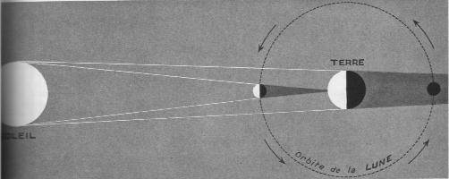
FIGURE VI
(mécanisme général des éclipses de Soleil et de Lune - Astronomie, Lucien Rudaux, Larousse, 1948)objet céleste est la forme [D] du FEU alchimique. Et que la taille de ce FEU dépend de la masse du corps. La figure suivante fera comprendre entièrement ce que nous souhaitons développer ici : le thème de l'éclipse. Une éclipse consiste en une interposition, au moment de la conjonction Lune-Soleil, qui survient évidemment lors de chaque Nouvelle Lune. Cette éclipse peut être partielle [phénomène assez fréquent]. Celle qui nous intéresse est l'éclipse totale, plus rare. La France a été touchée par une éclipse totale, en date du 11 août 1999. Voyez l'image de cette éclipse obtenue sur le logiciel Emapwin [takesako@mrj.biglobe.ne.jp]. La figure VI montre de façon on ne peut plus claire que l'éclipse sera totale pour la zone d'espace terrestre situé dans le cône d'ombre de la Lune. Le cône d'ombre de la Terre permet, de semblable manière, d'expliquer les éclipses de Lune, plus fréquentes à la vérité, que les éclipses de Soleil. Ce que nous voulons faire toucher du doigt au lecteur, c'est que ce signe de FEU symbolique que représente le cône d'ombre s'intègre, de façon plus générale dans le système de Platon, servant à décrire les transmutations d'un élément à un autre. Aussi voyons la figure VII qui va expliquer tout cela.
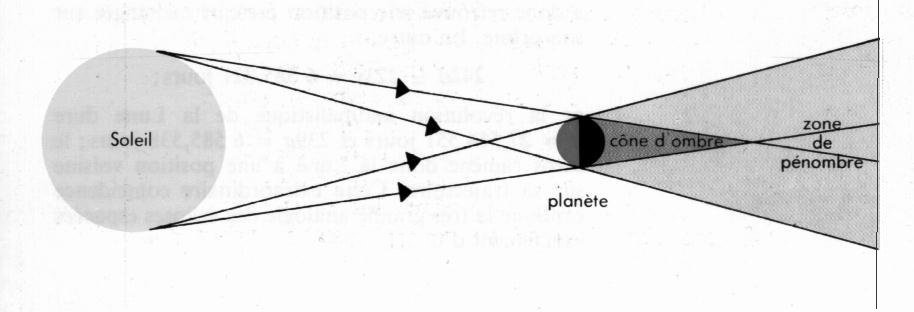
FIGURE VII
(les Quatre Eléments de Platon)Avant toute chose, il faut orienter ce schéma. Admettons que ce soit, ce qui est logique, la direction des photons incidents qui soit celle à considérer. Les quatre Eléments de Platon peuvent être retrouvés ainsi : posons que le pivot soit la Lune. Celle-ci, en s'interposant entre le Soleil et la Terre, va créer un cône d'ombre et une zone de pénombre. Nous allons prendre maintenant un cas particulier, celui de l'éclipse totale annulaire. Dans ce cas précis, correspondant à l'apogée de l'orbite de la Lune, la longueur de son cône d'ombre est inférieure à l'écartement qui la sépare de la surface terrestre ; l'observateur semblera donc voir le contour du disque lunaire s'inscrire devant le Soleil et nous aurons une éclipse annulaire [il s'agit sans doute de la Grande Eclipse de Soleil et de Lune de Lulle]. Voyons à présent la figure VIII.
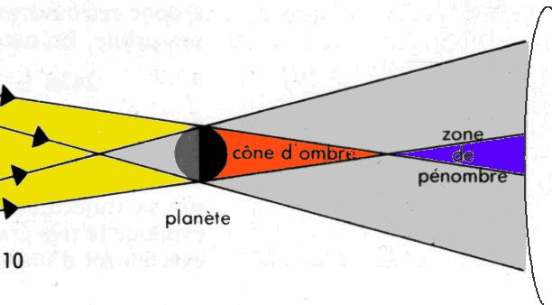
FIGURE VIII
(agrandissement de la figure VII - les Quatre Eléments)Les différentes zones d'ombre et de pénombre ainsi que leurs projections permettent de différencier quatre sous-ensembles :
- le cône d'ombre représente le FEU [corps illuminé par le Soleil projetant son ombre, par interposition] ;
- si l'on poursuit le cône d'ombre, on voit le triangle bleu, opposé au triangle de FEU : il s'agit de l'élément EAU ; il définit la zone d'éclipse où la lumière du soleil est totalement interceptée par la Lune ;
- le grand triangle gris, dans lequel s'inscrivent d'ailleurs le cône d'ombre définit l'anneau lumineux solaire visible en dehors de la zone en bleu [il n'est évidemment pas à l'échelle et devrait être plus petit que la zone en bleu] ; ce triangle définit l'élément TERRE ;
- enfin, en projetant à gauche les lignes du triangle de Feu, on définit le grand triangle [dont on ne voit pas la base] jaune, comme l'élément AIR ou plutôt ETHER.Ces supputations s'accordent assez bien avec la doctrine hermétique. Le FEU des alchimistes brûle et ne se voit point [dissolution] ; ils disent également qu'ils lavent avec du feu et brûlent avec l'EAU. Que la TERRE soit opposée à l'AIR, rien que d'évident.
8. C'est ce qu'affirme Aristote avec la notion de Primum Mobile, repris en cela et beaucoup plus tard par Placidus De Titis.
9. Il nous faut préciser une autre portée hermétique des éclipses dont nous n'avons pas parlé jusqu'à présent. Une éclipse de Soleil ne peut survenir que lorsque la ligne des noeuds de l'orbite lunaire coïncide avec la direction du soleil, au moment de la Nouvelle Lune. C'est-à-dire lorsque l'orbite lunaire coupe le plan de l'écliptique. Ce phénomène survient au cours d'un cycle qui est d'une durée de dix-huit ans et onze jours, cycle qui était déjà connu des anciens astronomes qui le désignèrent sous le nom de Saros. Pendant cette période, qui équivaut à 223 lunaisons, il y a en moyenne 71 éclipses, dont 43 de Soleil et 28 de Lune. Ce Saros dont nous allons parler bientôt a des rapports avec la Grande année lunaire et met en exergue l'importance des noeuds de la Lune, envisagés sous le plan de l'hermétisme. Pour cela, il nous faut revenir aux Chaldéens et aux explications tirées d'un ouvrage de Paul Tannery sur les Recherches sur l'Histoire de l'Astronomie antique :Ceux-ci [les Chaldéens] se sont, nous le savons, préoccupés beaucoup des éclipses, auxquelles ils attachaient une importance capitale pour la prédiction des événements futurs; ils sont donc parvenus à les annoncer d'avance et à les lier à des périodes remarquables; au contraire, la date des équinoxes ou des solstices n'offrait pour eux aucun intérêt particulier, à la différence de ce qui se présente chez les Grecs. La théorie du soleil, pour les Chaldéens, se trouvait enfin, malgré l'avancement de leur astronomie, entachée d'erreurs tenant ù leur ignorance de la trigonométrie, et assez graves (Le défaut d'instruments propres à relever exactement la position des astres dans le ciel permettait, au reste, aux Chaldéens de négliger ces erreurs.) pour que les effets de la précession des équinoxes pussent être négligeables. Ils s'en tinrent donc à l'année sidérale, d'autant qu'avec le système de leur année civile le déplacement des équinoxes n'était pas de nature à attirer l'attention.La question se résume d'ailleurs en un mot; il est certain que les Grecs, après les conquêtes d'Alexandre, s'enquirent avecardeur des connaissances astronomiques des Chaldéens; on continua, sous les Séleucides, à observer les astres à Babylone, et les anciennes traditions ne s'y étaient point encore perdues. Si les Chaldéens avaient fait des observations sérieuses de solstices et d'équinoxes, elles auraient été conservées, et Hipparque les aurait utilisées, comme il a fait pour les observations d'éclipses postérieures à Nabonassar.Cette période, le saros, fut donc découverte bien avant les Grecs par les Chaldéens, ancêtres des Babyloniens, environ 1000 ans av. J.-C. Cette précision étant apportée, examinons à présent les noeuds de la Lune. La tradition astrologique fait état des noeuds lunaires, nommés d'après leurs anciennes appellations imagées : Tête du Dragon, pour le noeud ascendant [à gauche sur la vignette, ce noeud marque pour une planète son lieu de transit de la face Sud à la face Nord de l'écliptique]
5. En dehors du ner de 600 ans, les Chaldéens ont-ils eu de grandes périodes pour Ici prédiction des éclipses ? M. Allégret (Utilité des périodes pour le calcul des éclipses, t. XXV des Mémoires de l'Académie des Sciences, Belles-Lettres, et Arts de Lyon) a supposé une période de 2,222 ans pour 27,484 lunaisons, qui serait d'ailleurs loin d'être satisfaisante. Mais son hypothèse repose uniquement sur une interprétation que je crois erronée du texte de Suidas au mot saroV [saros] :« Sares, mesure et nombre chez les Chaldéens. Les 120 sares font, en effet, 2,222 ans selon le calcul des Chaldéens, si toutefois le sare vaut 222 mois lunaires, ce qui fait 18 ans et 6 mois. »
Ce texte est d'ailleurs le seul sur lequel on s'appuie pour donner le nom de saros à la petite période écliplique de 223 (et non 222) lunaisons. Dans les meilleures éditions de Suidas, on a adopté la leçon 2220 (et non 2222) ans, ce qui correspond aux autres indications, puisque 120 X 18 ½ = 2220, et que, d'autre part, 18 ans de 12 mois, plus 6 mois, font bien 222 mois (Si le compilateur byzantin parle de mois lunaires, c'est évidemment par erreur II s'agit certainement de mois de 30 jours). Mais Bérose nous enseigne expressément que les Chaldéens comptaient par susses de 60 ans, ners de 600 ans, sares de 3600 ans, et ses données, complètement différentes de celles de Suidas, ont été amplement confirmées par les découvertes des assyriologues. Bérose peut nous fournir également la clef du passage précité de Suidas. Il énumère, en effet, dix rois qui auraient régné pendant une période d'en tout 120 sares, ou 432000 ans, antérieure au déluge. Il ne me paraît pas douteux que le texte de Suidas ne soit simplement un passage emprunté à quelque chronologue qui aura essayé de réduire, par une combinaison tout à fait arbitraire, la durée de cette période mythique de 120 sares à celle qu'il pensait pouvoir s'être écoulée entre la création du monde et le déluge (D'après les Septante, de la création du monde au déluge il s'est écoulé 2,242 ans; d'après la Vulgate, seulement 1,056 ans.). Il ne faut donc pas y chercher autre chose, croire à une période astronomique quelconque, ni conserver abusivement le terme de saros pour désigner la petite période écliptique de 223 lunaisons. Il est curieux de remarquer que les données chronologiques de la Genèse sur les anciens patriarches, d'après la Vulgate, reposent déjà sur une réduction des durées fantastiques imaginées par les Chaldéens. Cette réduction a été faite en raison d'une semaine de sept jours pour le cycle de cinq ans ou 60 mois de 30 jours. Si l'on poursuit celte comparaison pour les temps postérieurs au déluge, on trouve un autre rapport (de 1 à 60) entre la durée des événements racontés dans la Genèse et les laps de temps fabuleux que continue à assigner Bérose, et qui, pour les temps postdiluviens, doivent se décomposer en 12 fois 14.60 ans (période solhiaque), plus 12 fois 1805 ans (période écliplique), en tout39,180 ans (Voir, dans la Grande Encyclopédie, l'article Baliylone, signé S. Oppert.).
Bérose nous conduit ainsi jusqu'au commencement des temps historiques, qui est antérieur d'à peu près une période de 1805 ans au commencement de l'ère de Nabonassar. Il semble que, par ces combinaisons, les Chaldéens aient voulu indiquer les longues périodes indéterminées pendant lesquelles ils auraient d'abord suivi l'année vague de 360 jours, puis reconnu l'année de 365 j ¼ enfin déterminé le retour périodique des éclipses. Mais la période de 1805 ans, qui a été signalée en premier lieu par Halley, et que les singuliers rapprochements indiqués plus haut nous conduisent à attribuer aux Chaldéens, mérite d'appeler notre attention. Cette période, qu'on peut compter de 659,270 jours, est remarquable par son exactitude d'une part et aussi parce qu'elle correspond à très peu près a un nombre d'années tropiques. [...]
et la Queue du Dragon [à droite sur la vignette, inversement à ce qui a été dit pour le noeud Nord]. Ces noeuds ont été étudiés par les astrologues ; d'après eux, ils symboliseraient une position critique [de par le fait, sans doute, qu'ils « brisent » le plan de l'écliptique]. Le noeud ascendant [rayonnement lumineux, masculin - on retrouve la vieille dichotomie masculin-féminin chez les astrologues, même pour les noeuds de la Lune] marquerait l'origine d'une phase de rayonnement ; le noeud descendant [absorption, obscurité, féminin, etc.], au contraire, serait le symbole d'une phase de concentration, de contraction. Or, le noeud ascendant évoque une cloche, le second une lyre, un vase, un récipient ou une urne...cloche sans battant, lyre dépourvue de cordes, urne vide...indiquant que les noeuds n'exercent un influx que par l'intermédiaire d'une planète [ce qu'on veut bien croire pour l'alchimie, véritable Ciel chymique]. Au plan analogique, la cloche et la lyre sont des instruments qui agissent l'un par percussion ou frappement, si l'on préfère, l'autre par le pincement de cordes. La cloche, c'est encore un bourdon [par homonymie de cabale, le bâton de pèlerin]. Sachez encore que l'astrologie situe l'exaltation du noeud descendant dans le signe du Sagittaire [signe de l'inspiration ; nous en avons fait celui où le Centaure s'apprête à décocher sa pointe de Soufre vers le Corps, préludant à la phase d'accretion - remarquez que dans un cas comme dans l'autre, nous y trouvons l'âme, c'est-à-dire l'esprit « allumé, éveillé », l'inspiration étant à mettre sous un rapport identique] ; le noeud ascendant se voit consigné dans le signe des Gémeaux [Atalanta, XXXVIII]. Quoi qu'il en soit, l'image du noeud ascendant représente une jeune et belle vierge, pleine de vie et d'alerte beauté. D'un geste noble et confiant, elle élève un flambeau, qui permet d'y voir clair, avec assurance : c'est l'emblème de la fécondité. Quant à l'image du noeud descendant, elle représente une larve, une sorte de gouge informe, au corps serpentant qui, dans une nuit verdâtre, à peine éclaircie par le pâle croissant d'une lune indécise, s'enlise et s'enfonce chaque jour dans une matière infame, fangeuse et nauséabonde. L'image semble symboliser d'insondables mystères et des troubles dont il semble difficile de se libérer.
Voilà les opinions de l'astrologue et de l'hermétiste traditionnel. Qu'en retenir ? Il faut s'en remettre à la cabale phonétique et à l'homonymie spirituelle qui, seules, sont de justes guides dans notre quête. Les alchimistes, hommes pleins d'esprit et souvent espiègles, nous ont habitué à considérer que leur Art était celui de la Musique, ce qu'à Dieu ne plaise. Considérons la planche initiale du Mutus Liber, chef d'oeuvre muet de notre Art sacré. Nous y voyons deux trompettes qui se font l'écho pour signifier à Mercure qu'il est temps de se réveiller. Cet écho peut s'entendre d'une onde sonore comme de celle formée de photons [comprenez un reflet]. Nous avons dit supra que la première trompette était symbolisée par le miroir du Soleil [la Lune] qui parvenait sur la Terre. Au plan alchimique, cela signifie que le Soufre ne pourra être formé de manière canonique que s'il passe d'abord par le médiateur dont le signe est constitué d'un point cerclé, auquel est annexée une croix [crux pour creuset] et qui est tangent à un demi-cercle où l'on devine notre Diane cornée [Atalanta, XLII]. Il est temps de parler de la seconde trompette. Le lecteur l'aura sans doute deviné, elle constitue pour ainsi dire l'écho de l'écho [comprenez le clair de Terre, lumière où nous voyons la Lune de notre Lune, à la fois mère et soeur, ce qui semble vrai autant d'un point de vue hermétique qu'astronomique - il semble bien que la Lune soit née d'une projection de matière terrestre de suites d'un cataclysme rapporté à un bolide géant]. Pour la parabole, nous ne saurions trop vous recommander de lire un admirable roman de Jules Verne, sur un sujet connexe : Hector Servadac, 1877, [dit « à la sphère céleste » avec de la Terre à la Lune et Autour de la Lune, 1880, rééd.]. Aussi bien la première trompette était-elle le signe du Mercure, aussi bien la deuxième trompette annonce-t-elle le Soufre, par la lumière cendrée. Mais revenons à notre cloche [kwdwn]. Une occurrence désigne l'ouverture de la trompette ou plus simplement, la trompette. En dérive kwdwnizw [faire sonner, éprouver une monnaie en la faisant tinter] où l'on verra immédiatement le jeu de mot primaire entre « tinter » et « étain » que nous ne savons pas provenir d'une cabale bien conduite et dont Fulcanelli aurait sans doute proscrit l'application. Mais poursuivons. Kwdwn désigne aussi les clochettes dont étaient pourvus les gardiens qui faisaient, jadis, les rondes nocturnes. Est-ce assez dire que notre Lune se fait annoncer bien à l'avance ? Et que l'Artiste qui opère au grand magistère et qui tient boutique forcément la nuit, de préférence et par nécessité, ne doit pas arborer la devise : « Au Lion d'Or » ? Il s'agit nécessairement d'un Lion ailé, tel que celui que l'on voit dans la chapelle de l'Hôtel Lallemant, logis alchimique qui se révèle être un puits sans fond en matière de symbolisme ?
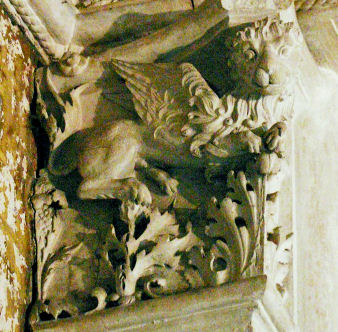
FIGURE IX
(Lion ailé - Hôtel Lallemant - cliché Alain Mauranne)Aussi faut-il rappeler, de toute nécessité qur notre Diane cornue est avant tout un Lion qui tient de l'aigle et du vautour. Curieux mélange qui a produit, en une parthénogénèse singulière, par adjonction d'une matière terreuse, un Lion croisé. C'est-à-dire, littéralement un « Xlion » [comprenez Ilion. En grec, la lettre I vaut X, signe crucifère ; Lion : lewn - d'où : IlewV, qui paraît renvoyer à Dionysos par ilaoV : de bonne humeur, car le vin rend l'esprit agile. Vous aurez noté que nous avions en vue la Cité d'Hector]. Sur le bourdon pris comme bâton, voyez en recherche. Quant au symbolisme du noeud descendant, nous vaons toute raison d'y voir une urne funéraire, là où l'on recueille les cendres des métaux morts, avant de les réincruder. Aussi verrions-nous plutôt, s'il fallait lui trouver un lieu d'exaltation, les Gémeaux plutôt que le Sagittaire, et inverser les rapports dont a parlé A. Boudineau [Astrologie, cahier n°6, 1938, Etudes scientifiques]. On peut aussi remarquer que le signe du noeud n'est autre qu'une variante de celui du Cancer, les deux renflements des virgules [constituant les Soufres] étant désormais soudés et les matières dissoutes.
10. Latone est la mère des Soufres, Appolon et Artémis. Elle constitue l'un des états du Rebis, chose double [voyez les deux trompettes ou les deux échos de lumière de la Lune et de la Terre]. Voyez l'Atalanta, XLIV, note 23.
11. Toutes ces paraboles sont en conformité avec nos réflexions, y compris le symbolisme touchant le noeud ascendant du Dragon ; le battant de la cloche n'est autre que le premier agent [identique au frappement du rocher ou à l'épée du chevalier qui tue le Dragon]. Notez qu'en latin, la cloche [campana] est aussi une sorte de romaine [Balance].
12. voyez : 1, 2, 3, 4, 5, 6,
13. pour désigner quelque chose de peu de valeur, c'est-à-dire la « Matière première ». En fait, il s'agit de la matière préparée. En grec, jukoV [algue] désigne la teinture rouge extraitee d'une sorte d'algue, et désigne par extension, le Soufre. Voyez aussi : 1, 2, 3, 4, 5, 6, 7, 8, 9, 10,
14. le lecteur aura pu voir que nous avons choisi, précisément, le thème de l'ombre, pour broder des variations sur l'éclipse, en employant ce sujet imposé, cf. note 7.
15. Nous aurions pu prendre pour thème Ulysse aveuglant le Cyclope [kukloV : circulaire, voyez l'image suivante montrant une éclipse annulaire].
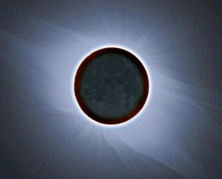
FIGURE X
(éclipse annulaire : Ulysse aveuglant Polyphème)Lorsqu'Ulysse rend aveugle Polyphème, nous avons affaire à une allégorie sur la dissolution. Voici un extrait du Chant I de l'Odyssée [trad. Leconte de Lisle, chez Jean de Bonnot, 1982] :
« [...] mais Odysseus restait seul, loin de son pays et de sa femme, et la vénérable Nymphe Kalypsô, la très noble Déesse, le retenait dans ses grottes creuses, le désirant pour mari. »
Il n'est pas difficile, par analogie, d'imaginer ce que cache la grotte creuse : il s'agit du Mercure. Nous avons vu ce qu'il fallait penser d'Ulysse quant à son rapport au magistère dans l'Atalanta, XLIV. Ulysse est retenu sur l'île Ogygié [Wgugia, île de Cos]. Revoyons à cet égard l'hiéroglyphe du noeud ascendant : il est semblable à un W majuscule [W]. John Dee, dans sa Monade Hiéroglyphique a fait voir ce qu'il fallait penser au sujet des lettres a et w. Des indications sur le signe du Taureau et sur celui du Bélier, c'est-à-dire sur les signes qui voilent les composants du dissolvant, et, touchant au Bélier, l'aspect dual entre Arès et Ariès. Précisément, le rapport entre le Bélier et l'île où Ulysse est retenu prisonnier se manifeste par Cos [KwV, proche de KwaV qui désigne la Toison, c'est-à-dire le christophore, autre nom d'Ariès]. Nous ajouterons que le vocable KwV contient en soi le mystère de l'oeuvre [il suffira de rappeler ce conseil de Fulcanelli aux étudiants, examiant l'acronyme SXKWH - SXKOH -: « Soufre et Potasse pour l'X »]. Et que le Mercure se fait, à en croire les bons auteurs, en mêlant le vin et l'eau [WgugioV, par udwr : l'eau antique, l'eau du Verseau].
16. sur le Capricorne, cf. Atalanta, XLIII. Le Capricorne est un signe de Terre et c'est, effectivement, sous cette forme poudreuse et sèche, que se présentent les substances préparées.
17. Nous émettrons des doutes sur l'ordre des travaux que prescrit Michel Maier. Voici un tableau qui fait le point de nos réflexions sur les analogies magistère - signes du zodiaque tropical.
TABLEAU I
(symbolisme des signes du zodiaque dans leur rapport à l'alchimie)Nous proposons ainsi l'ordre suivant pour les travaux.
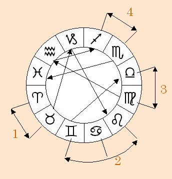
FIGURE XI
(ordre des travaux en liaison avec l'alchimie - 2ème oeuvre - 3ème oeuvre)On voit qu'il existe 4 zones où les signes sont en contiguité dans le travail :
- la zone 1 est dévolue au 2ème oeuvre : c'est la préparation du Mercure [Bélier et Taureau = FEU + TERRE] ;
- la zone 2 est celle de la première partie de la Coction : du Capricorne, elle se présente avec trois signes où le travail est complexe et ne se laisse pas démêler aisément [on propose l'ordre : Cancer - Lion - Gémeaux = AIR + FEU + EAU] ;
- la zone 3 est celle de la maturation du Rebis ou Airain [Balance - Vierge = EAU + TERRE] ;
- la zone 4 est celle qui a trait au « retour des cendres » qui va marquer le début de l'empâtement de l'eau mercurielle [Sagittaire - Scorpion = FEU + AIR].Les travaux intermédiaires sont situés, par ordre, dans le Capricorne [passage zone 1 à zone 2, signe de TERRE], dans le Verseau [passage zone 3 à zone 4, signe d'EAU], et enfin, les Poissons [signe d'AIR] où se termine l'oeuvre. Ces trois signes sont eux-mêmes contigus, mais séparés par les 4 époques que nous avons déterminées. Ces 4 époques se suivent dans l'ordre des signes du zodiaque, mais dans chaque zone on observe une rétrogradation de l'ordre dans lequel les travaux sont effectués.